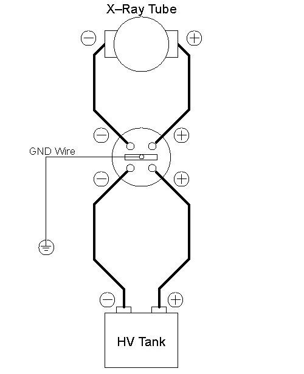

Operating Documentation
Direction 5193755-800, Rev# 8
BrightSpeed (Ltd. Access) Service Methods - Adv
Operating Documentation |
| Required Persons | Preliminary Reqs | Procedure | Finalization |
|---|---|---|---|
| 1 | Timing Not Applicable | 45 mins | Timing Not Applicable |
This procedure verifies the kV accuracy, by actually taking scans with connecting a high voltage bleeder.
| Item | Qty | Effectivity | Part# | Manufacturer | |
|---|---|---|---|---|---|
| High Voltage bleeder | 1 | - | - | - | |
| Oscilloscope | 1 | - | - | - | |
| HV Cable Damage. Do not sharply bend HV cables, or damage the cables. The minimum allowed radius of bent HV cables is 6.35 cm (2.5 in.). | |
| Electric shock | |
| Use a ground bar to discharge the high voltage connector any time you disconnect it. |
Perform warm-up scans, if the x-ray tube is cold.
Remove gantry right side cover.
Turn off all three service switches on the Service Switch Panel (Axial Drive, HVDC, 120VAC)
Remove and set aside the top and front gantry covers.
Rotate the gantry such that the x-ray tube is in the 3 O'clock position.
Lock the gantry in position, using the rotational lock. Ensure that gantry rotation is locked by attempting to rotate the gantry by hand.
Free the HV cables.
Carefully cut ty-raps securing HV cables. Note HV cable routing.
Loosen the cable's locking rings with a spanner wrench.
Pull cable terminal sticks out of their receptacles on HV tanks. Oil will leak-cover them quickly!
Install the HV bleeder between the HV tank and tube. Use the patient table to place the bleeder.
Illustration 1: Bleeder Connection Block Diagram

| Potential for Equipment Damage. Ensure that you attach a ground cable from the bleeder to the gantry GND chassis. Incorrect bleeder setup can result in damage to the HV Subsystem. | |
Unlock the gantry, and rotate the gantry such that the x-ray tube is in the 12 O'clock position.
Lock the gantry in position.
Setup the oscilloscope.
To minimize noise and obtain a common ground, you should plug the oscilloscope into either the gantry or the console.
Connect channel one probe to KV_N (TP18) and scope ground to KV_GND (TP17) on the CT Interface board in the power unit.
If 10x probes are used, set horizontal scale = 200 ms, vertical scale = 10V/div
Trigger channel one, negative slope, DC couple, trigger mode normal.
Turn ON the 120VAC and HVDC ENABLE on the Service Switch Panel.
Clear the E-Stop condition by pressing the DRIVES RESET button on the Service Switch Panel.
Wait about 2 minutes for the gantry display to reset. No flashing lights on the gantry display should indicate this.
On the Service Desktop, select [DIAGNOSTICS] , then [X-RAY GENERATION] , then [KV & MA (X-RAY)] .
Verify the following scan parameters:
X-Ray test type = manual
Gantry = Disabled
Exposure time = 1s
No of scans = 1
Focal Spot = Large
V = 80kV
mA = 50mA
Press RUN and take scan.
Measure the output. (It may be noisy ~2v peak-to-peak. This is normal.)
Using cursors on the oscilloscope, measure the mean for channel 1 from just inside the front edge to just inside the back edge of the waveform.
Repeat for channel 2 mean.
Repeat the measurements for 100, 120, and 140kV scans.
Verify internal scan timer.
Change trigger slope on oscilloscope to positive. Adjust trigger level to TTL if necessary.
Take the following scan.
X-Ray test type = manual
Gantry = Disabled
Exposure time = 1s
No of scans = 1
Focal Spot = Large
kV = 100kV
mA = 50mA
Measure the output.
Using cursors on the oscilloscope, measure the scan time (Δt) from just inside the front edge to just inside the back edge of the waveform.
| Potential for equipment damage. Incorrectly sealed and secured HV cables can result in damage to the tank or other parts of the gantry. | |
Reconnect HV cables from tube to tanks.
The scale factor for your kV measurements (at the test points) is x 20 (i.e. 4V => 8kV).
The kV measured at the bleeder and at the test points should be within ±2% of the requested kV, respectively.
The internal scan timer measurement should be within ±4%.
Record the results on the HHS data sheet and / or take appropriate service action.